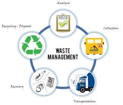

Environmental science is a multidisciplinary field that explores the interactions between humans and the environment.
It draws knowledge from various disciplines such as biology, chemistry, physics, ecology, geology, and geography to
understand the complex systems of the Earth and the impact of human activities on these systems.
Central to environmental science is the concept of sustainability, which aims to meet the needs of the present without
compromising the ability of future generations to meet their own needs. This involves balancing environmental, social
and economic considerations to ensure the long-term health and well-being of both humans and the planet.
One key focus of environmental science is the study of ecosystems, including their structure, function, and the services
they provide to humans. Ecosystem services, such as clean air, fresh water, and fertile soil, are essential for human
survival and well-being. Understanding how ecosystems function and the impacts of human activities on them is crucial for
sustainable resource management and conservation.
Environmental science also examines the impact of human activities on the Earth's climate and natural resources. Climate
change, driven primarily by the burning of fossil fuels and deforestation, poses a significant threat to ecosystems and
human societies worldwide. Mitigating and adapting to climate change require interdisciplinary approaches that address
both the causes and impacts of this global challenge.
Pollution is another critical issue addressed by environmental science. Air, water, and soil pollution have detrimental
effects on human health, biodiversity, and ecosystem functioning. Environmental scientists study the sources and effects
of pollution and develop strategies to reduce and prevent pollution through sustainable practices and technologies.
In conclusion, environmental science plays a crucial role in addressing the complex environmental challenges facing our
planet. By understanding the interactions between humans and the environment and promoting sustainable practices, environmental
science seeks to ensure a healthy and prosperous future for all living beings.
Facts and Figures for Waste Management in India
India produces 62 million tonnes of waste annually, with 70% collected, and only 12 million tonnes treated, while 31 million tonnes end up in landfills.
The generation of municipal solid waste is expected to rise to 165 million tonnes by 2030 due to changing consumption patterns and rapid economic growth.
Challenges Faced in Waste Management
India faces challenges in managing waste. The informal sector plays a significant role in extracting value from waste, but many challenges remain.
Rapid urbanization:
Urban areas with 377 million people generate about 62 million tons of solid waste every year. However, only 43 million tons are collected, and the rest ends up untreated or in landfills.
E-waste is also a growing concern, with projections showing a substantial increase in e-waste generation.
Lack of adequate garbage collection infrastructure, with only 21 million garbage collectors compared to China’s 700 million.
Sorting recyclable materials is also a problem, as only about 30% of waste is properly sorted, leading valuable materials like aluminum and plastics to end up in landfills instead of being recycled.

Earth is a lot greener than it was 20 years ago. What sounds like a reason to celebrate should be taken with a grain of salt. Leafy green areas that have been added to the Earth’s surface since 2000 and were catalogued by NASA satellite MODIS appeared because of reforestation as well as agricultural activity.
Especially in China and India increased human activity has caused more areas to be covered with plants. China increased its green area by 17.8 percent between 2000 and 2017, while India added 11.1 percent. The EU, which the study counts among the eleven “countries” with the largest overall leaf-covered area, came in third. Scientists analyzing the data for a study published in the Nature Sustainability journal found that in the case of China, 42 percent of added greenery was from new forests and 32 percent was from cropland. The country has recently invested billions in reforestation programs. India on the other hand had to chalk up 82 percent of its leaf increase to agriculture. In Brazil for example, the increase in green cropland was still offset almost entirely by the disappearance of forests and savanna vegetation.
Overall, the leaf-covered area on Earth increased by more than 4 percent in the 18 years surveyed, two-thirds of the increase being from agricultural activity. Especially the use of genetically modified crops, multiple growth cycles, intensive irrigation and fertilizer use as well as farm mechanization has made agriculture more visible on satellite imagery, especially in developing nations.